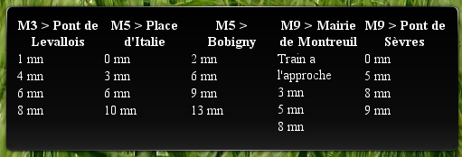

Presentation
Voici un widget dont je me sers pour afficher les prochains métros aux stations qui m'intéressent. Je l'utilise principalement dans KDE Plasma, en tant que plasmoid avec "Tranche de Web".
Aperçu

Dependances
Il n'y a pas de dépendance particulière.
Par contre, étant donné qu'il s'appuie sur le site web mobile de la RATP, il est évident qu'en cas de changement du site, le widget sera probablement cassé.
Utilisation
Vous devez avoir un serveur web gérant PHP 5.
Dans widget.php, configurer les infos que vous souhaitez récupérer et la manière de les afficher. Le fichier tel qu'il est est un exemple fonctionnel.
Et voilà !